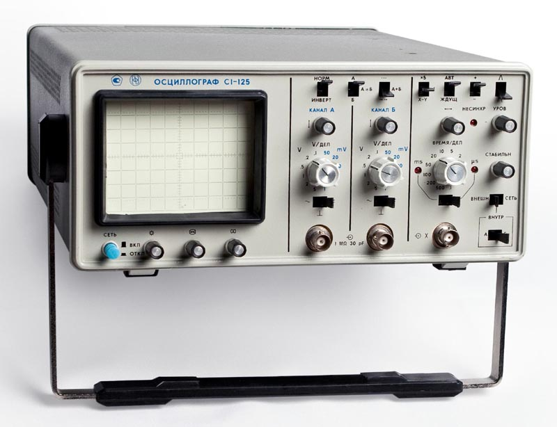
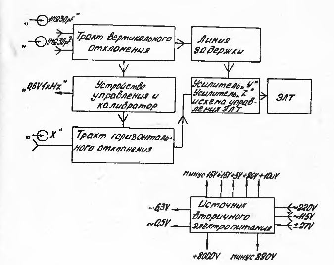
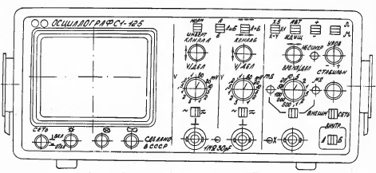
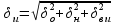
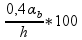
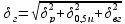
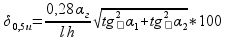
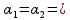
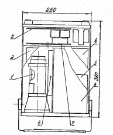

|
|
блок преобразования частоты язч-175/1
блок преобразования частоты автоматический язч-175 (язч-175/1) предназначен для преобразования и автоматического изменения совместно с частотомером электронно-счетным вычислительным чз-64(чз-64/1) частоты непрерывных синусоидальных (нг) сигналов и несущей частоты импульсно-модулированных (им) сигналов в диапазоне частот от 1,5 до 18 ггц
режим тренажера: режим эмулятора
режим эмулятора
режим справки режим обучения режим контроля |
Осциллограф универсальный С1-125
Техническое описание и инструкция по эксплуатации
Часть 1
1988
Осциллограф универсальный С1-125
Внешний вид

рис. 1. 1
1. НАЗНАЧЕНИЕ
1.1. Осциллограф универсальный С1-125 предназначен для исследования периодических электрических сигналов путём визуального наблюдения и измерения их амплитудных и временных параметров по шкале экрана электронно-лучевой трубки (ЭЛТ) и полосе частот от 0 до 10 MHz в лабораторных, цеховых и полевых условиях.
1.2. Рабочие условия эксплуатации:
повышенная температура окружающего воздуха, 0С 50;
пониженная температура окружающего воздуха, 0С минус 30;
повышенная влажность, % 98 при 25 0С;
атмосферное давление, mm Hg от 400 до 780.
1.3. Осциллограф применяется при производстве, разработке и эксплуатации радиоэлектронной аппаратуры.
1.4. Техническое описание и инструкция по эксплуатации (ТО) предназначено для ознакомления с принципом работы, устройством и конструкцией осциллографа C1-125 с целью правильной его эксплуатации.
1.5. Настоящее ТО состоит из двух частей:
2.044.028 ТО техническое описание и инструкция по эксплуатации.
Часть 1;
2.044.028 ТОI техническое описание и инструкция по эксплуатации. Часть 2. Альбом схем.
Примечание. В части 2 приводятся электрические принципиальные схемы осциллографа и перечни элементов.
1.6. Внешний вид осциллографа показан на рис. 1. 1, комплект ЗИП осциллографа - на рис. 3. 1.
2. ТЕХНИЧЕСКИЕ ДАННЫЕ
2.1. Рабочая часть экрана ЭЛТ осциллографа:
по горизонтали 80 mm (10 дел);
по вертикали 60 mm (8 дел).
Примечание. В скобках указаны размеры экрана ЭЛТ в делениях шкалы.
2.2. Ширина линии луча не более:
0,1 дел (0,8 mm) при коэффициентах отклонения 2 mV/дел и более;
0,2 дел (1,5 mm) при коэффициенте отклонения ImV/дел. Геометрическое отклонение не более 3,5%.
2.3. Минимальная частота следования развёртки, при которой обеспечивается наблюдение исследуемого сигнала при коэффициенте развёртки 0,1 µS/дел и включенной растяжке, не более 1 кHz.
2.4. Коэффициенты отклонения каналов А и Б устанавливаются двенадцатью калиброванными ступенями от 1 mV/дел до 5 V/дел.
2.5. Предел допускаемого значения основной погрешности коэффициентов отклонения каждого из каналов равен ± 4%.
Предел допускаемого значения погрешности коэффициентов отклонения в рабочих условиях применения равен ± 6%.
2.6. Параметры переходной характеристики (ПХ) каждого из каналов вертикального отклонения не более значений:
время нарастания - 35 nS;
выброс - 6%;
время установления - 170 nS;
неравномерность на участке установления - 6%;
неравномерность после времени установления - 2%.
Величина синхронной наводки на начальном участке линии развёртки не более ± 0,2 дел.
2.7. Спад вершины ПХ в каждом канале при закрытом входе на временном интервале 0,5 mS не более 5%.
2.8. Дрейф луча каждого канала на экране ЭЛТ не более:
2 дел/h (долговременный дрейф);
0,2 дел/min (кратковременный дрейф).
2.9. Смещение луча каждого канала на экране ЭЛТ не более:
1дел из-за входного тока и при переключении переключателя V/ДЕЛ;
2 дел при инвертировании сигнала в канале А.
2.10. Предел перемещения луча по вертикали в каждом канале относительно середины рабочей части экрана ЭЛТ не менее 60 mm (8 дел).
2.11. Параметры входа каждого канала вертикального отклонения:
при непосредственном входе
входное активное сопротивление, MΩ - 1 ± 0,02;
входная ёмкость, pF, не более - 30;
с делителем 1:10
входное активное сопротивление, MΩ - 1 ± 0,02;
входная ёмкость, pF - 12 ± 2.
2.12. Допускаемое суммарное значение постоянного и переменного напряжений при закрытых входах каждого канала вертикального отклонения не более 100 V, на открытом входе - не более 90 V, с делителем 1:10 - не более 300 V.
2.13. Коэффициент развязки между каналами вертикального отклонения не менее 2000.
2.14.Задержка изображения сигнала на экране ЭЛТ относительно начала развертки до уровня 0,1 не менее 30 nS.
2.15. Тракт вертикального отклонения обеспечивает следующие режимы работы:
наблюдение сигнала в канале А;
наблюдение сигнала в канале Б;
суммирование сигналов каналов А и Б;
поочередную или прерывистую коммутацию каналов А и Б;
изменение полярности сигнала канала А.
2.16. Тракт горизонтального отклонения обеспечивает автоколебательный и ждущий режимы работы.
2.17. Коэффициенты развёртки устанавливаются от 0,1 µS/дел до 500 mS/дел в последовательности 1; 2; 5 с возможностью их пятикратной растяжки.
2.18. Предел допускаемого значения основной погрешности коэффициентов развёртки равен ± 4% без растяжки и ± 5% с растяжкой.
Предел допускаемого значения погрешности коэффициента развёртки в рабочих условиях применения равен ± 6% без растяжки и ± 7,5% с растяжкой.
2.19. Перемещение луча по горизонтали обеспечивает совмещение начала и конца линии развёртки с центром экрана.
2.20. Коэффициент отклонения усилителя горизонтального отклонения не более 0,5 V/дел. Полоса пропускания усилителя горизонтального отклонения не менее 20 Hz - 1 MHz.
2.21. Параметры входа X и внешней синхронизации развёртки:
входное активное сопротивление, MΩ - не менее 0,9;
входная ёмкость, pF, не более - 50.
2.22. Тракт горизонтального отклонения обеспечивает следующие виды синхронизации развёртки:
внешнюю синхронизацию;
синхронизацию от канала А;
синхронизацию от канала Б;
синхронизацию от сети.
2.23. Внутренняя и внешняя синхронизация осуществляется гармоническими сигналами в диапазоне частот от 10 Hz до 10 MHz и импульсными сигналами длительностью от 0,1 µS до 0,5 S.
В автоколебательном режиме синхронизации осуществляется сигналами с частотой не менее 50 Hz.
2.24. Предельные уровни синхронизации:
при внутренней синхронизации минимальный уровень не более 0,8 дел, максимальный - не менее 8 дел;
при внешней синхронизации минимальный уровень амплитуды сигнала не более 0,2 V, максимальный - не менее 5 V.
Нестабильность синхронизации не более 0,2 деления шкалы экрана ЭЛТ.
2.25. Калибратор осциллографа обеспечивает на выходе прямоугольные импульсы типа "меандр" с частотой следования 1 кHz амплитудой 0,6 V.
Пределы допускаемых значений основных погрешностей амплитуды и частоты следования импульсов калибратора равны ± 1%.
Пределы допускаемых значений погрешностей амплитуды и частоты следования импульсов калибратора в рабочих условиях применения равны ± 1,5%.
2.26. Электрическая изоляция цепи питания между входом сетевого разъёма и корпусом осциллографа выдерживает без пробоя и поверхностного перекрытия испытательное напряжение переменного тока частотой 50 Hz, амплитудным значением 1,5 кV в нормальных условиях и 900 V при повышенной влажности.
2.27. Электрическое сопротивление изоляции цепи питания осциллографа относительно корпуса, MΩ, не менее:
в нормальных климатических условиях - 20
при повышенной температуре окружающего воздуха - 5
при повышенной влажности окружающего воздуха - 2
2.28. Электрическое сопротивление между контактом защитного заземления осциллографа и металлическими частями корпуса не более 0,5 Ω.
2.29. Осциллограф обеспечивает свои технические характеристики в пределах норм, установленных ТУ, по истечении времени установления рабочего режима равного 15 min.
2.30. Осциллограф допускает непрерывную работу в рабочих условиях в течение времени не менее 16 h при сохранении своих технических характеристик в пределах норм, установленных ТУ.
Примечание. Время непрерывной работы не включает в себя время установления рабочего режима осциллографа.
2.31. Осциллограф сохраняет свои технические характеристики в пределах норм, установленных ТУ, при питании его от сети постоянного тока напряжением (27 ± 2,7) V и переменного тока:
напряжением (220 ± 22) V, частотой (50 ± 1) Hz и содержанием гармоник до 5%;
напряжением (220 ± 11) V, частотой (400 ± 10) Hz и содержанием гармоник до 5%;
напряжением (115 ± 5,75) V, частотой (400 ± 10) Hz и содержанием гармоник до 5%;
2.32. Мощность, потребляемая осциллографом от сети питания при номинальном напряжении, не более 35 V. А от сети переменного тока напряжением 220 V, частотой 50 Hz и 21 W от источника постоянного тока напряжением 27 V.
2.33.Осциллограф сохраняет свои технические характеристики в пределах норм, установленных ТУ, после замены в нём ЭЛТ.
Допускается подрегулирование осциллографа с помощью имеющихся органов подстройки, предусмотренное электрической принципиальной схемой осциллографа и инструкцией по эксплуатации.
2.34. Режимы электровакуумных, полупроводниковых приборов, электрорадиоэлементов соответствуют нормам, установленным в стандартах и ТУ на них и должны обеспечиваться в рабочих условиях в течение времени непрерывной работы, установленного в п. 2.30.
2.35. Напряжение индустриальных радиопомех, создаваемых осциллографом, не более:
от 76 до 68 dB на частоте от 0,15 до 0,5 MHz;
от 68 до 60 dB на частоте от 0,5 до 6 MHz;
60 dB на частоте от 6 до 100 MHz.
2.36. Осциллограф прочен к механическим ударам многократного действия с пиковым ударным ускорением 90 m/s2 и синусоидальной вибрации в диапазоне от 5 до 200 Hz с ускорением 19,6 m/s2 и от 201 до 300 Hz с ускорением 14,7 m/s2 .
2.37. Наработка на отказ осциллографа Tо не менее 7000 h.
2.38. Гамма-процентный ресурс не менее 10000 h при γ = 90%.
2.39. Гамма-процентный срок службы не менее 10 лет при γ = 90%.
2.40. Гамма-процентный срок сохраняемости не менее 10 лет для отапливаемых хранилищ и 5 лет для неотапливаемых хранилищ при γ = 90%.
2.41. Среднее время восстановления осциллографа не более 4 h.
2.42. Вероятность отсутствия скрытых отказов не менее 0,9 за межповерочный интервал 24 мес при среднем коэффициенте использования Kи = 0,2.
2.43. Габаритные размеры, mm, не более:
корпуса осциллографа - 260*120*360;
табельной упаковки - 585*185*505;
транспортной тары - 815*260*670.
2.44. Масса осциллографа не более 4,9 kg;
масса осциллографа с табельной упаковкой не более 15 kg;
масса осциллографа с транспортной тарой не более 35 kg;
4. ПРИНЦИП ДЕЙСТВИЯ
4.1. Осциллограф, структурная схема которого приведена на рис. 4.1, состоит из следующих основных частей:
тракта вертикального отклонения;
тракта горизонтального отклонения;
устройства управления и калибратора;
усилителя Y, усилителя Z и схемы управления ЭЛТ;
линии задержки;
ЭЛТ;
источника вторичного электропитания.
4.1.1. Исследуемый сигнал подаётся на вход одного или обоих каналов тракта вертикального отклонения, где осуществляется усиление сигнала до напряжений, обеспечивающих заданный размер изображения по вертикали на экране ЭЛТ. В тракте вертикального отклонения осуществляется коммутация каналов в зависимости от заданного режима работы каналов осциллографа.
4.1.2. Тракт горизонтального отклонения обеспечивает получение синхронного с исследуемым сигналом линейного развёртывающего напряжения и его усиление для получения заданного размера изображения сигнала по горизонтали.
4.1.3. Устройство управления служит для управления режимами работы трактов вертикального и горизонтального отклонений и для индикации с помощью светодиодов установленных режимов работы.
Калибратор служит для калибровки трактов вертикального и горизонтального отклонения, а также для компенсации внешнего делителя 1:10.
4.1.4. Усилитель импульсов подсвета со схемой управления ЭЛТ осуществляет управление яркостью, производит гашение обратного хода луча и подаёт необходимые напряжения питания на электроды ЭЛТ.
Выходной усилитель Y осуществляет усиление сигнала до необходимого уровня и подаёт его на пластины Y ЭЛТ.
4.1.5. Линия задержки осуществляет необходимую задержку исследуемого сигнала для получения возможности исследования его переднего фронта и подачу его на выходной усилитель Y.
Схема электрическая структурная осциллографа С1-125

Рис. 4.1.
4.1.6. ЭЛТ обеспечивает преобразование электрических сигналов, поступающих на её входы, в видимое изображение исследуемого сигнала.
4.1.7. Источник вторичного электропитания (ИВЭП) предназначен для преобразования переменных напряжений питающей сети (220 ± 22) V (50 ± 1) Hz и (400 ± 10) Hz, (115 ± 5,75) V (400 ± 10) Hz и постоянного напряжения (27 ± 2,7) V в необходимые для питания узлов осциллографа уровни напряжений и их стабилизации и сглаживания пульсаций.
4.2. Устройство и работа составных частей осциллографа изложены в разделе 2.
7. МЕРЫ БЕЗОПАСНОСТИ
7.1. По степени защиты от поражения электрическим током осциллограф соответствует классу защиты 1 ГОСТ 12.2.007.0-75.
7.2. При эксплуатации, ремонте и настройке осциллографа следует учитывать наличие внутри его напряжений, опасных для жизни человека, поэтому категорически запрещается работа осциллографа со снятыми крышками и без заземления корпуса.
Корпус осциллографа заземляется при подключении трёхполюсной вилки кабеля питания в розетку питающей сети. При работе от источника постоянного тока корпус осциллографа заземлять путём соединения клеммы " " с шиной заземления.
7.3. Клемму защитного заземления присоединять первой, а отсоединять последней.
7.4. Все перепайки в осциллографе проводить при выключенной тяге СЕТЬ, а при перепайках в блоке питания ввиду опасности поражения напряжением сети, необходимо вынимать из розетки вилку кабеля питания.
7.5. При измерениях в цепях схемы управления ЭЛТ необходимо использовать высоковольтные пробники из-за наличия в схеме напряжений выше 1 кV.
7.6. Следует помнить, что на контакте XP3 выпрямителя блока питания "+8 кV" сохраняется в течение длительного времени после выключения осциллографа высокое напряжение.
7.7. При ремонте осциллографа, связанного с отключением высоковольтного провода ЭЛТ от контакта XP3 выпрямителя блока питания "+8 кV" (например при замене трубки), соединить указанные контакты с корпусом осциллографа с помощью высоковольтного провода. Это необходимо для разряда высоковольтных конденсаторов схемы и для снятия высокого напряжения с розетки XS6 провода ЭЛТ.
7.8. Преобразователь высоковольтный, находящийся под высоким напряжением имеет символ " ↯ " , предупреждающий об опасности поражения электрическим током .
7.9. При проведении измерений, при обслуживании и ремонте, в случае использования осциллографа совместно с другими приборами или включении его в состав установок, потенциалы корпусов всех приборов выровнять.
8. ПОРЯДОК РАБОТЫ
8.1. Расположение органов управления, настройки и подключения
8.1.1. Органы управления, настройки, подключения и индикации для удобства работы оператора сгруппированы по зонам. Схема расположения органов управления, настройки, подключения и индикации на передней панели приведена на рис.8.1.
8.1.2. Под экраном ЭЛТ слева направо расположены следующие органы управления:
тяга "сеть" - для включения и отключения осциллографа;
ручка "☼" - для регулировки яркости луча ЭЛТ;
ручка "⨂" - для фокусировки луча ЭЛТ;
ручка " ⊙ " - для регулировки астигматизма.
Схема расположений органов управления, настройки подключения и индикации осциллографа С1-125

Рис. 8.1
8.1.3. Справа от экрана ЭЛТ находится передняя панель, разбитая вертикальными линиями на три зоны.
8.1.4. В левой зоне передней панели сгруппированы сверху вниз следующие органы управления и присоединения канала А тракта вертикального отклонения:
переключатель НОРМ, ИНВЕРТ - для инвертирования сигнала в канале А;
ручка " ↓ " для перемещения по вертикали изображения сигнала в канале А;
переключатель V/ДЕЛ - для переключения коэффициентов отклонения от 1mV до 5V в канале А;
переключатель " ∼ , ⊥ , ≂ " - для переключения входа канала А в положения закрытый, заземлённый и открытый входы соответственно:
гнездо " 1 MΩ 30 pF" - для подачи исследуемого сигнала на вход канала А осциллографа.
8.1.5. В средней зоне передней панели сгруппированы сверху вниз следующие органы управления и присоединения канала Б тракта вертикального отклонения:
переключатель А, А и Б, Б - для переключения режимов работы тракта вертикального отклонения и наблюдения исследуемого сигнала в соответствующих положению переключателя режимах;
переключатель " - - -, А+Б, → → " для переключения тракта вертикального отклонения при работе в двухуровневом режиме в положения: прерывистое изображение двух сигналов, алгебраическое суммирование изображений сигналов в двух каналах и поочерёдное изображение двух каналов;
ручка " ↕ " - для перемещения по вертикали изображения сигнала в канале Б;
переключатель V/ДЕЛ - для переключения коэффициентов отклонения от 1 mV до 5 V в канале Б;
переключатель " ∼ , ⊥ , ≂ " - для переключения входа канала Б в положения закрытый, заземленный и открытый входы соответственно;
гнездо " 1 МΩ 30 pF " - для подачи исследуемого сигнала на вход канала Б осциллографа.
8.1.6. В правой зоне передней панели сгруппированы слева направо и сверху вниз следующие органы управления и присоединения тракта горизонтального отклонения:
переключатель "x5, x1, X-Y" - для включения режима пяти кратной растяжки размера изображения по горизонтали и включения режима X-Y;
переключатель АВТ, ЖДУЩ - для выбора режима работы тракта горизонтального отклонения;
переключатель "+, -" - для переключения полярности сигнала синхронизации;
переключатель "Л, М" - для выбора формы частотной характеристики канала синхронизации;
ручка " ↔ " - для перемещения по горизонтали изображения сигнала;
ручка УРОВ и светодиод НЕСИНХР - для выбора уровня запуска развёртки и его индикации;
переключатель ВРЕМЯ/ДЕЛ - для переключения коэффициентов развёртки от 0,1 µS до 500 mS с шагом 1, 2, 5;
ручка СТАБИЛЬН - для устойчивой синхронизации сигналов с высокой частотой следования;
переключатель " mS, µS " со светодиодами для выбора диапазона коэффициентов развёртки и его индикации;
переключатель ВНЕШН, ВНУТР, СЕТЬ - для переключения источников синхронизации;
гнездо " X " - для подключения источника внешней синхронизации или внешнего источника развёртки;
переключатель А, Б - для выбора режима синхронизации по нужному каналу в режиме внутренней синхронизации.
8.1.7. На правой стенке корпуса осциллографа расположены переключатель "⎍, ⎓ " - для выбора формы выходного сигнала калибратора, гнездо калибратора "0,6 V 1 кHz " для снятия выходного сигнала калибратора.
8.1.8. На задней панели осциллографа расположены органы управления и подключения:
переключатель "115 V 400 Hz, 220 V 50/400 Hz " - для выбора источника питания;
разъём для подключения сетевого кабеля осциллографа;
гнёзда "0,5 A" и "3А" - для установки вставок плавких;
клемма " " - для подключения защитного заземления;
8.1.9. На верней поверхности корпуса осциллографа имеется отверстие "" для калибровки коэффициентов развёртки, закрытое заглушкой.
8.1.10. На нижней поверхности корпуса осциллографа имеются отверстия:
" А", " Б" - для калибровки коэффициентов усиления в каналах А и Б;
" А", " Б" - для балансирования каналов А и Б тракта вертикального отклонения.
8.2. Подготовка к проведению измерений
8.2.1. Использовать для удобства работы с осциллографом ручку переноса, закреплённую на боковых стенках, как подставку.
Для установки осциллографа под удобным для оператора углом оттянуть "стопоры", установленные в основании ручки переноса, повернуть ручку на требуемый угол и отпустить "стопоры", при этом ручка зафиксируется в выбранном положении.
8.2.2. Установить перед включением осциллографа органы управления, расположенные на передней панели, в следующие положения:
тяга СЕТЬ - нажата;
ручки "☼", "⨂", "⨀", "↔", "↕" - с среднее положение;
переключатель АВТ, ЖДУЩ - в положение АВТ;
переключатель ВНЕШН, ВНУТР, СЕТЬ - в положение ВНУТР.
Остальные органы управления могут быть в произвольных положениях.
8.2.3. Перед включением осциллографа убедиться в наличии вставок плавких на его задней панели и их соответствии маркировочным надписям.
Для подключения осциллографа к сети переменного тока напряжением 220 и 115 V и источнику постоянного тока напряжением 27 V использовать кабели питания с соответствующей маркировкой.
Установить переключатель " 115 V, 220 V" на задней панели в соответствии с выбранным источником сети переменного тока.
Заземлить клемму " " осциллографа.
Соединить кабель питания с питающей сетью и потянуть на себя тягу СЕТЬ.
В результате включения осциллографа должен загореться один из светодиодов "mS" или "µS" в зависимости от исходного положения ручки соответствующего переключателя, а с некоторой задержкой на экране ЭЛТ должна появиться линия развёртки. Осциллограф обеспечивает свои технические характеристики в пределах норм, установленных ТУ, по истечении времени установления рабочего режима равного 15 min.
8.2.4. Отрегулировать яркость, фокусировку и астигматизм изображения ручками "☼", "⨂", "⨀". При регулировки яркости изображения ручкой "☼" возможно нарушение его фокусировки и астигматизма. В этом случае проводить регулировку фокусировки и астигматизма ручками "⨂" и "⨀".
8.2.5. Балансировку тракта вертикального отклонения проводить для каналов А и Б следующим образом:
установить переключатели " ∼ , ⊥ , ≂ " обоих каналов в положение "⊥";
переключатели А, Б и А, А и Б, Б - в положение А для балансировки канала А и Б положение Б для балансировки канала Б;
переключатель V/ДЕЛ - в положение "10 mV";
ручкой "↕" установить линию развёртки луча на центральную горизонтальную линию шкалы экрана ЭЛТ;
переключатель V/ДЕЛ - в положение "1 mV";
установить линию развёртки луча на центральную горизонтальную линию шкалы экрана ЭЛТ регулировкой резисторов "⊿⊿ А" для канала А или "⊿⊿ Б" для канала Б, оси которых выведены под шлиц на нижней поверхности корпуса осциллографа.
При необходимости операции балансировки повторить.
Отклонение линии луча от центральной горизонтальной линии шкалы экрана ЭЛТ не должно превышать одного деления шкалы при переключении переключателей V/ДЕЛ в обоих каналах и двух делений шкалы при переключении переключателя НОРМ, ИНВЕРТ в канале А. В противном случае осциллограф подлежит ремонту.
8.2.6. Для проведения калибровки коэффициентов отклонения и коэффициентов развёртки проделать следующие операции:
установить переключатель " ∼ , ⊥ , ≂ " канала А(Б) в положение "≂";
установить переключатели V/ДЕЛ каналов А и Б в положение " , 1 V";
установить переключатели ВРЕМЯ/ДЕЛ и "mS, µS" в положение "1mS";
установить переключатель "⎍, ⎓" в положение "⎍";
подать на вход канала А(Б) сигнал с гнезда калибратора "0,6 V 1 кHz";
установить ручкой УРОВ неподвижное изображение сигнала на экране ЭЛТ;
совместить ручкой "↕" канала А(Б) нижнюю горизонтальную часть изображения сигнала со второй снизу горизонтальной линией шкалы экрана ЭЛТ, при этом вершины прямоугольных импульсов должны совпадать со второй сверху горизонтальной линией шкалы экрана ЭЛТ.
В случае несовпадения установить размер изображения сигнала равным шести делениям шкалы экрана ЭЛТ регулировкой " А" ("Б") оси резистора, выведенной под шлиц на нижней поверхности корпуса осциллографа;
ручкой "↔" совместить вертикальную часть сигнала с крайней левой линией шкалы экрана ЭЛТ, при этом в десяти делениях шкалы ЭЛТ должно уложиться десять периодов сигнала калибратора.
В случае несовпадения установить размер изображения по горизонтали равным десяти периодам сигнала в десяти делениях шкалы экрана ЭЛТ регулировкой "" оси резистора, выведенной под шлиц на верхней поверхности корпуса осциллографа.
8.2.7. Для компенсации внешнего делителя 1:10 проделать следующие операции:
подключить делитель 1:10 на вход канала А(Б);
подключить вход внешнего делителя 1:10 к выходному гнезду калибратора "0,6 V 1 кHz";
регулировкой подстроечного конденсатора, расположенного в корпусе внешнего делителя 1:10, обеспечить равномерность вершины на изображении импульсного сигнала калибратора на экране ЭЛТ.
8.3. Проведение измерений
8.3.1. Подать исследуемый сигнал на вход канала А(Б) " 1 МΩ 30 pF" через соединительные кабели или выносные делители 1:10, входящие в комплект осциллографа.
Примечание. Использовать делитель 1:10 предпочтительнее, так как при этом осциллограф значительно меньше влияет на исследуемую схему.
Установить переключатель "⎍, ⎓" в положение "⎍";
установить переключатели А, А и Б, Б и А, Б в положение А(Б), переключатель "- - -, А+Б, → →" в положение "- - -" или "→ →" для работы в одноканальном режиме, а для работы в двухканальном режиме переключатель А, А и Б, Б в положение А и Б;
установить переключатель режима развёртки АВТ, ЖДУЩ в положение АВТ;
установить переключатель режима синхронизации ВНЕШН, ВНУТР, СЕТЬ в положение ВНУТР.
Примечание. 1.При установке переключателя "mS, µS" в положение " mS" предпочтительней работать в прерывистом режиме, а в положении " µS" - в режиме поочередно.
2. В диапазоне частот от 10 Hz до 50 Hz переключатель АВТ,ЖДУЩ установить в положение ЖДУЩ, а в остальном диапазоне частот - в любое положение.
3. В диапазоне частот от 10 Hz до 10 кHz переключатель "Л, М", установить в положение "Л", в диапазоне частот от 10 кHz до 10 МHz - в положение "М".
Установить переключателем V/ДЕЛ и ручкой "↕" канала А(Б) удобные для наблюдения размер и положение сигнала на экране ЭЛТ по вертикали:
получить, вращая ручки УРОВ и СТАБИЛЬН, устойчивое изображение на экране ЭЛТ;
Установить переключателем ВРЕМЯ/ДЕЛ и ручкой "↔" удобные для наблюдения размер и положение изображения сигнала на экране ЭЛТ по горизонтали.
Определить визуально линейные размеры изображения заданных параметров сигнала или его частей в делениях шкалы экрана ЭЛТ.
Примечание. 1. Погрешность измерения амплитуды импульсов прямоугольной формы определять для обоих каналов по формуле:
 (8.1)
где - погрешность коэффициента отклонения, %;
- значение неравномерности ПХ, %;
= - визуальная погрешность, %;
- ширина линии луча по вертикали, mm;
h - размер изображения по вертикали, mm;
Для сокращения расчётов при предельных значениях параметров осциллографа = 4%, = 2%, = 0,8 mm, h = 30 mm (4 дел) погрешность измерения амплитуды импульсов прямоугольной формы определять по формуле:
 (8.2)
где - погрешность коэффициента развёртки, %;

- погрешность, вызванная неточностью определения уровня 0,5 амплитуды сигнала, %;
= - визуальная погрешность, %;
- ширина линии луча по горизонтали, mm;
l - размер изображения по горизонтали на уровне 0,5 амплитуды сигнала, mm;
- углы, образованные фронтом и спадом импульса и вертикальной линией шкалы соответственно.
Для сокращения расчётов при предельных значениях параметров осциллографа , h = 30 mm,  45˚, l ≥ 32 mm, погрешность измерения длительности импульсов в нормальных условиях может быть принята = 4,25 %.
2. Для измерения и исследования параметров сигнала, например длительности фронта импульса, можно при необходимости пользоваться растяжкой "x5", позволяющей производить измерения до 20 nS/дел.
8.3.2. Для работы в прерывистом режиме:
установить переключатель "- - -, А+Б, → →" в положение "- - -";
установить переключатель "V/ДЕЛ" в положение "2V";
соединить кабелем при помощи тройника СP-50-95 ФВ гнездо "0,6 V 1 кHz" с гнёздами " 1 МΩ 30 pF";
установить переключатель ВРЕМЯ/ДЕЛ в положение " ,5 mS";
вращать ручку УРОВ и добиться устойчивого изображения сигналов;
установить ручками "↕" изображения сигналов (импульсы типа "меандр") симметрично осевой линии экрана ЭЛТ.
8.3.3. Для работы в поочередном режиме установить переключатель "- - -, А+Б, → →" в положение "→ →". Убедиться в наличии двух изображений сигналов ив переключении сигналов через каждый ход развёртки на малых скоростях развёртки.
8.3.4. Для работы в режиме алгебраического суммирования:
установить переключатель "- - -, А+Б, → →" в положение "А+Б";
убедиться в появлении на экране ЭЛТ одного сигнала вдвое большей амплитуды;
убедиться, что вращая ручки "↕" каждого из каналов, изображение перемещается по шкале экрана ЭЛТ;
установить переключатель НОРМ, ИНВЕРТ в положение ИНВЕРТ;
убедиться в отсутствии изображения сигнала калибратора и наличие на экране ЭЛТ изображения выбросов на фронте и срезе импульса калибратора.
8.3.5. Выбрать источник синхронизации в соответствии с табл.8.1.
Выбрать ручкой УРОВ уровень сигнала синхронизации, по которому осуществляется запуск развёртки.
Добиться ручкой СТАБИЛЬН устойчивой синхронизации развёртки при высокой частоте следования сигнала синхронизации.
8.3.6. В режиме развёртки осциллограф обеспечивает следующие режимы запуска - автоколебательный и ждущий.
8.3.6.1. Автоколебательный режим используется для получения линии развёртки в отсутствие запускающего сигнала. Включению автоколебательного режима развёртки соответствует положение АВТ переключателя АВТ. ЖДУЩ.
8.3.6.2. Ждущий режим используется для исследования сигналов с большой скважностью. Включению ждущего режима развёртки соответствует положение ЖДУЩ переключателя АВТ.ЖДУЩ.
8.3.7. Растяжка развёртки позволяет растянуть в пять раз по горизонтали на любом участке развёртки для детального исследования сигнала. Для использования режима растяжки переместить ручкой "↔" интересующий участок изображения в центр экрана. Установить переключатель "x5, x1, X-Y" в положение "x5". При этом коэффициент развёртки, отсчитанный переключателем ВРЕМЯ/ДЕЛ уменьшается в пять раз.
8.3.8. Режим развёртки сигналом от внешнего источника применять в тех случаях, когда для горизонтального отклонения луча необходимо напряжение не пилообразной, а любой другой формы.
Для работы в указанном режиме установить переключатель "x5, x1, X-Y" в положение "X-Y". Сигнал внешней развёртки подать на гнездо " X", либо на вход " 1 MΩ 30 pF" канала А или Б. При этом переключатель ВНЕШ, ВНУТР, СЕТЬ установить:
в положение ВНЕШ, если сигнал подан на гнездо " X";
в положение ВНУТР, если сигнал подан на вход " 1 MΩ 30 pF" канала А или Б.
В этом случае переключатель А, Б установить в положение, соответствующее тому каналу, на который подан сигнал внешней развёртки.
Меняя амплитуду входного сигнала внешней развёртки, либо переключая переключатель V/ДЕЛ соответствующего канала вертикального отклонения установить требуемый размер изображения по горизонтали.
Исследуемый сигнал при этом подать на свободный вход " 1 MΩ 30 pF" канала А или Б.
Таблица 8.1
|
Включенный режим |
Переключатель |
Положение переключателя |
Сигнал синхронизации |
|
Внешняя |
ВНЕШ, ВНУТР, СЕТЬ |
ВНЕШН |
Синхронизация внешним сигналом, подаваемым на гнездо " X" |
|
Внутренняя по каналу А
А и Б
По каналу Б
|
ВНЕШ, ВНУТР, СЕТЬ А, Б А, А и Б, Б А, А и Б, Б
А, Б А, Б
"---,А+Б,→→" А, А и Б, Б А, Б
А, А и Б, Б А, Б
А, Б А, А и Б, Б
|
ВНУТР
А А А и Б
А Б
А+Б А и Б А
А и Б Б
Б Б
|
Синхронизация сигналом, поступающим из канала А
Синхронизация сигналом, поступающим из канала А Синхронизация сигналом, поступающим из канала Б Алгебраическое суммирование сигналов в обоих каналах с синхронизацией по каналу А Алгебраическое суммирование сигналов в обоих каналах с синхронизацией по каналу Б Синхронизация сигналом, поступающим из канала Б
|
|
СЕТЬ |
ВНЕШ, ВНУТР, СЕТЬ |
СЕТЬ |
Синхронизация сигналом питающей сети |
|
Синхронизация по переднему фронту |
"+, -" |
"+" |
Запуск развёртки возрастающим участком сигнала ( _|¯ ) |
|
Синхронизация по заднему фронту |
"+, -" |
"-" |
Запуск развёртки спадающим участком сигнала ( ¯|_ ) |
|
"Л" |
"Л, М" |
"Л" |
Синхронизация осуществляется низкочастотными составляющими сигнала синхронизации от 10 Hz до 10 кHz |
|
"М" |
"Л, М" |
"М" |
На вход системы синхронизации поступают все спектральные составляющие сигнала синхронизации свыше 10 кHz |
10. КОНСТРУКЦИЯ
Осциллограф С1-125 имеет блочно-функциональную конструкцию (рис. 10.1) и состоит из базового блока и следующих функциональных блоков:
усилителя вертикального отклонения;
устройства управления;
блока развёртки и синхронизации;
блока усилителя Y, усилителя Z и схемы управления ЭЛТ;
преобразователя;
преобразователя и выпрямителя.
Схема расположения основных блоков осциллографа С1-125

Рис. 10.1
1 - ЭЛТ;
2 - блок усилителя "Y", усилителя "Z" и схема управления;
3 - преобразователь и выпрямитель;
4 - усилитель вертикального отклонения;
5 - устройство управления;
6 - блок развёртки и синхронизации;
7 - преобразователь;
8 - линия задержки.
Базовый блок состоит собственно из шасси и задней панели, соединённых между собой винтами. Сборка шасси осуществляется контактной точечной сваркой из деталей, изготовленных методом холодной штамповки. Шасси включает в себя также и переднюю панель.
ЭЛТ расположена в левой части осциллографа, установлена в электромагнитном экране, закреплённом на шасси. Внутри экрана расположена отклоняющая система. В левой части осциллографа расположена печатная линия задержки, изготовленная из гибкого диэлектрика. Она имеет четыре секции и помещена в электростатический экран. Снизу к шасси крепятся 2 платы: предварительного усилителя Y и плата, на которой расположены оконечный усилитель Y, усилитель Z и схема управления ЭЛТ.
Вертикально к поперечной стенке шасси крепится плата преобразователя и выпрямителя. В верхней части осциллографа горизонтально расположен блок развёртки и синхронизации. Ниже (в средней части осциллографа) находится плата устройства управления. К задней панели крепятся силовой трансформатор и плата преобразователя.
Коммутация блоков осуществляется с помощью соединителей с ленточными проводами, а также других разъёмов.
Осциллограф имеет два кабеля питания, подключением которых осуществляется коммутация питающих напряжений ±27 V или 115/220 V. Переключение напряжения 115-220 V осуществляется тумблером, расположенным на задней панели осциллографа. Там же находятся клемма "" и сетевой разъём для подключения кабелей питания и держатели вставки плавкой.
Осциллограф имеет защитный корпус, в котором предусмотрены отверстия для естественной вентиляции, а также ручку для переноса.
11. ОПИСАНИЕ ЭЛЕКТРИЧЕСКОЙ ПРИНЦИПИАЛЬНОЙ СХЕМЫ
11.1. Тракт вертикального отклонения
Тракт вертикального отклонения предназначен для усиления исследуемого сигнала до величины, обеспечивающей наблюдение его на экране ЭЛТ, инвертирования полярности сигнала в канале А, ступенчатой регулировки усиления и представляет собой двухканальный балансный усилитель постоянного тока с полосой пропускания 0-10 MHz и состоит из усилителя вертикального отклонения, линии задержки и выходного усилителя.
11.1.1. Усилитель вертикального отклонения
Усилитель вертикального отклонения состоит из двух аттенюаторов, двух каналов предварительного усиления сигналов А и Б, усилителя коммутатора внутренней синхронизации.
Два идентичных аттенюатора установлены на входах каналов А и Б и предназначены для декадного ступенчатого ослабления входного сигнала в диапазоне 0-60 B и обеспечения высокого входного импеданса каналов осциллографа. Аттенюаторы позволяют исследовать входной сигнал в режимах открытого " ≂ " и закрытого " " входа, либо заземлять вход канала " ⊥ ". Аттенюатор состоит из входного высокоомного частотно-компенсированного делителя и входного усилителя-трансформатора импеданса.
Коммутация, обеспечивающая переключение ослабления уровня сигнала и режимов " ", " ⊥ " и " ≂ ", осуществляется магнитоуправляемыми контактами, управляемыми следующими элементами устройства управления:
коэффициенты отклонения канала А - переключателем S4; канала Б - переключателем S5;
режимы " ", " ⊥ ", " ≂ " канала А - тумблером S7 и микросхемами DD1, DD2;
режимы " ", " ⊥ ", " ≂ " канала Б - тумблером S6 и теми же микросхемами;
Входной делитель образован двумя Г-образными частотно-компенскрованными звеньями, включаемыми с помощью магнитоуправляемых контактов усилителя вертикального отклонения S5, S6, S11, S12 (канал А) и S8, S9, S13, S14 (канал Б) и обеспечивающими затухание 1:10 (резисторы R1, R3; конденсаторы C3, C5) и 1:100 (резисторы R2, R4; конденсаторы С4, C6).
С помощью конденсаторов С3, С4 осуществляется частотная компенсация звеньев, а с помощью конденсаторов C1, С2 - подстройка их входной ёмкости. Учитывая идентичность аттенюаторов в каналах А и Б и каналов предварительного усиления, далее в скобках указаны идентичные элементы канала Б. Прохождение сигнала без ослабления (1:1) осуществляется замыканием магнитоуправляемого контакта S4 (S7). Режим открытого входа обеспечивается замыканием магнитоуправляемого контакта S1 (S2) и размыканием контакта S3 (S10). В режиме заземлённого входа магнитоуправляемые контакты S1, S3 (S2, S10) разомкнуты, а магнитоуправляемый контакт S12 (S14) замкнут. Трансформатор импеданса выполнен по схеме дифференциальной "тройки" с последовательной отрицательной обратной связью по току на полевых и транзисторных сборках ˅Т3, ˅Т4, ˅Т7, ˅Т9 (˅Т5, ˅Т6, ˅Т8, ˅Т10). Транзистор ˅Т1 (˅Т2) в диодном включении служит для защиты транзисторов ˅Т3, ˅Т4 (˅Т5, ˅Т6) от пробоя при перегрузках отрицательным входным напряжением. Во входном усилителе осуществляется изменение коэффициента передачи К в 10 раз. При замкнутом магнитоуправляемом контакте S15 (S16) К = 10, при разомкнутом - К = 1.
Резистор R17 (R18) " А" (" Б") обеспечивает балансировку аттенюатора.
Каналы предварительного усиления предназначены для усиления сигналов с выходов аттенюаторов А и Б, инвертирования полярности сигнала в канале А, а также ступенчатой регулировки усиления и выполнены на микросхеме DA1 (DA2), представляющей аналоговый перемножитель, и транзисторной паре ˅Т11 (˅Т12). Резистором R42 (R46) осуществляется балансировка перемножителя по сигнальному входу, а резистором R54 (R55) осуществляется калибровка чувствительности каналов усиления. Конденсатором С23 (С26) производится настройка амплитудно-частотной характеристики (АЧХ) предварительного усилителя в области верхних частот. Ступенчатое изменение усиления в 2,5 и 5 раз осуществляется подачей на управляющий вход перемножителя (вывод 4 микросхем DA1, DA2) постоянного напряжения, определяемого переключаемыми резисторными делителями - резисторы R71, R79, R80, R87, R88 (R72, R81, R82, R89, R90) и опорным напряжением, которое формируется стабилитронами на плате устройства управления.
Калибровка переключаемых коэффициентов передачи производится резисторами R79, R80, (R81, R82). Инвертирование полярности сигнала в канале А осуществляется путём переключения полярности управляющего напряжения.
Сигналы с выходов каналов предварительного усиления КТ5, КТ6 (КТ7, КТ8) поступают на вход усилителя - коммутатора каналов, выполненного на микросборке DA3 и представляющего собой два дифференциальных каскадных усилителя, работающих на общую нагрузку (резисторы R98, R99) и диодные ключи. Усилитель-коммутатор каналов осуществляет следующие режимы работы тракта вертикального отклонения: А - прохождение сигнала от канала А, Б - от канала Б, А и Б - прерывистое или поочерёдное прохождение сигналов от каналов А и Б, "А+Б" - алгебраическое суммирование сигналов от каналов А и Б, " ↕ " - смещение линии луча по вертикали в каналах А и Б. Необходимый режим работы усилителя - коммутатора определяется логическими уровнями на его управляющих входах (выводы 10, 12 микросборки DA3), которые формируются в блоке развёртки и синхронизаци. При подаче на вывод 10 логической "1" и вывод 12 логического "0" осуществляется прохождение через усилитель-коммутатор сигнала с канала Б. Противоположное состояние на управляющих входах усилителя-коммутатора соответствует прохождению сигнала с канала А.
В режиме А и Б происходит переключение усилителя-коммутатора с частотой 100 кHz (в положении "---" переключателя "---, А+Б, →→") или с частотой развёртки (в положении "→→" того же переключателя).
В случае подачи на оба управляющих входа усилителя-коммутатора уровня логического "0" сигналы каналов А и Б проходят через коммутатор и их алгебраическая сумма выделяется на резисторах R98, R99, тем самым обеспечивается режим суммирования А+Б. Смещение лучей в каналах А и Б осуществляется резисторами R4 и R5 устройства управления путём перекоса режимных токов в плечах усилителя-коммутатора каналов (выводы 7, 9 и 2, 13 микросхемы DA3).
После коммутации сигналов каналов А и Б итоговый сигнал поступает на каскад согласования с линией задержки выполненный на транзисторе ˅Т13 с генератором тока выполненным на транзисторе ˅Т14. Резистор R115 и конденсатор С39 служат для коррекции АЧХ в области средних частот, а резистор R117 - для согласования линии задержки. Выходной сигнал через вилку XPI поступает на линию задержки.
Усилитель-коммутатор сигнала синхронизации выполнен на микросборке DA4, аналогичной микросборке DA3. Сигнал от канала А поступает на дифференциальные входы 6, 8 (1, 14) микросборки DA4. Управление коммутацией осуществляется с помощью тумблера S17 "А, Б".
11.1.2. Линия задержки служит для задержки сигнала тракта вертикального отклонения на время, несколько большее времени задержки запуска развёртки, что позволяет исследовать фронт импульсных сигналов. Линия задержки представляет собой четырёхсекционную симметричную печатную линию с распределёнными параметрами и обеспечивает время задержки 160 nS при волновом сопротивлении 100 Ω.
11.1.3. Выходной усилитель предназначен для согласования выхода линии задержки и усиления исследуемых сигналов до напряжений, необходимых для нормальной работы вертикально-отклоняющей системы ЭЛТ. Первый каскад выходного усилителя выполнен на микросхеме DA1 и служит для согласования выхода линии задержки. В каскаде на микросхеме DA2 с помощью конденсатора C4 осуществляется коррекция АЧХ в области верхних частот. Комплементарные эмиттерные повторители на транзисторах ˅Т3, ˅Т4 и микросхеме DA3 служат для согласования каскада на микросхеме DA2 с оконечным каскадом и обеспечивают неискажённую передачу фронтов импульсов обеих полярностей. Оконечный каскад построен на транзисторах ˅Т6, ˅Т7 по схеме с общим эмиттером, параллельной отрицательной обратной связью по направлению и динамической нагрузкой. В качестве последней служат транзисторы ˅Т5 и ˅Т8. Транзисторы ˅Т1 и ˅Т2 стабилизируют рабочие точки транзисторов ˅Т5 и ˅Т8 при смещении луча по вертикали, уменьшая частотные искажения сигнала. Конденсаторами С31 и С32 в цепи отрицательной обратной связи проводится коррекция АЧХ оконечного каскада.
11.2. Тракт горизонтального отклонения
Тракт горизонтального отклонения предназначен для получения синхронного с исследуемым сигналом напряжения развёртки, обеспечивающего наблюдение исследуемого сигнала на экране ЭЛТ. Тракт горизонтального отклонения выполнен в виде блока развёртки и синхронизации.
Тракт горизонтального отклонения состоит из:
схемы синхронизации;
схемы управления;
генератора пилообразного напряжения;
усилителя горизонтального отклонения.
11.2.1. Схема синхронизации предназначена для формирования стандартизированного сигнала с уровнем ТТЛ (логический " 0 " U<0,4<V; логическая " 1 " U<2,4<V), период следования которого равен периоду следования исследуемого сигнала или внешнего сигнала, подаваемого на розетку " X ", расположенную на передней панели осциллографа. В состав схемы синхронизации входят: входной каскад внешней синхронизации (розетка XW1; делитель R5, R10, C1; диод ˅D11; транзисторные сборки ˅Т2 и DA4), коммутатор каналов синхронизации (диоды ˅D1-˅D10, ˅D12-˅D15; транзистор ˅Т1), входной каскад синхронизации от сети (транзисторная сборка DA3), усилитель сигнала синхронизации (транзисторная сборка ˅Т3; транзисторы ˅Т6, ˅Т10), схема ограничения полосы пропускания канала синхронизации (диоды ˅D17-˅D20; конденсаторы С6, С7), схема управления уровнем запуска (транзисторная сборка DA5), синхронизатор (микросхема DA8) и схема переключения полярности синхронизации (микросхема DD2.1).
Входной каскад внешне синхронизации обеспечивает заданный входной импеданс канала внешней синхронизации за счёт применения истокового повторителя (транзистор ˅Т2) и частотно-компенсированного делителя (резисторы R5, R10, конденсатор С1). Диод ˅D11 защищает входной каскад от перегрузки. Кроме того, этот каскад при помощи дифференциального усилителя (микросхема DA4) расщепляет фазу входного сигнала и сдвигает уровень его в положительную область ( +6V) для обеспечения нормальной работы коммутатора каналов синхронизации.
Входной каскад синхронизации от сети (микросхема DA3) расщепляет фазу сигнала синхронизации и сдвигает его по уровню в положительную область (+6V) для нормальной работы коммутатора каналов синхронизации.
Коммутатор каналов синхронизации выполнен по схеме диодного коммутатора. Диоды ˅D3-˅D6 открывает либо закрывают канал внутренней синхронизации, ˅D7, ˅D10, ˅D13, ˅D15 - канал внешней синхронизации и ˅D8, ˅D9, ˅D12, ˅D14 - канал синхронизации от сети. При подаче в точку соединения диодов ˅D3 и ˅D4 (˅D10 и ˅D13; ˅D9 и ˅D12) высокого уровня напряжения соответствующий канал закрыт, а при подаче низкого - открыт.
Каскад на транзисторе ˅Т1 и диодах ˅D1, ˅D2 выполняют логическую функцию "И", т. е. когда каналы внешней синхронизации и синхронизации от сети закрыты - открывается канал внутренней синхронизации.
Усилитель сигнала синхронизации выполнен на транзисторной сборке ˅Т3 по схеме с общей базой. Он усиливает поступающий на него парафазный сигнал синхронизации и смещает его на уровень +0,6V. В состав усилителя синхронизации входят также эмиттерные повторители на транзисторах ˅Т6, ˅Т10. Они обеспечивают низкий импеданс на входе компаратора синхронизации (микросхема DA8) и смещает сигнал до постоянного уровня равного 0V.
Схема ограничения полосы пропускания канала синхронизации реализована на диодном мосте ˅D17-˅D20, при помощи которого конденсаторы С6, С7 соединяются между собой по переменному току и шунтирую входы эмиттерных повторителей. При переключении переключателя S1 в положение "Ω" резистор R44 заземляется и открывает диодный мост. При переключении в положение "µ" на резистор R44 подается запирающее смещение, мост закрывается и весь сигнал синхронизации поступает на вход компаратора (микросхема DA8).
Схема управления уровнем запуска смешает плечи парафазного усилителя по постоянному току, регулируя тем самым уровень запуска синхронизатора. Для этого между эмиттерами дифференциального каскада, выполненного на транзисторной сборке DA5, включается переменный резистор "Уровень", выведенный на переднюю панель, установленный на плате устройства управления и подключенный через контакты 4, 12, розетки XS1.
Синхронизатор формируется из поступающего на его вход исследуемого сигнала, стандартизированный сигнал ТТЛ - уровня с таким же периодом повторения, как и исследуемый сигнал. Синхронизатор выполнен на компараторе (микросхема 521CA4).
Схема переключения полярности синхронизации предназначена для выбора точки синхронизации на нарастающем либо падающем участке исследуемого сигнала. Схема выполнена на элементе ИСКЛЮЧАЮЩЕЕ ИЛИ (микросхема DD2.1), который при подаче на 13 вывод уровня логического "0" передаёт сигнал без изменения, а при подаче логической "1" - инвертирует его.
11.2.2. Схема управления предназначена для формирования импульсов прямого и обратного хода, определения наличия на выходе компаратора синхроимпульсов, блокирования компаратора на время прямого хода, формирования сигналов управления коммутатором каналов вертикального отклонения. В состав схемы управления входят: триггер управления (микросхема DD4.1), триггер блокировки (микросхема DD3.1), одновибратор ждущей развёртки (микросхема DD5.1), генератор прерывистого переключения каналов (микросхемы DD1.3, DD1.4, DD7.3), схема формирования сигнала гашения луча (микросхемы DD1.6, DD2.4, DD7.4). Триггер управления, совместно с триггером блокировки обеспечивает своевременное включение и выключение ключей генератора пилообразного напряжения и формирования импульсов прямого и обратного хода.
Триггер управления выполнен на синхронном D-триггере (микросхема DD4.1), на тактовый вход которого подаются синхроимпульсы. После окончания времени блокировки триггер управления устанавливается в исходное состояние по R-входу (на 8-м выходе уровень логической "1") и первый положительный перепад на С-входе переключит триггер в рабочее состояние (на 8-м выходе уровень логического "0") и тем самым закроет ключ генератора пилообразного напряжения (ГПН) и начнётся прямой ход развёртки. В качестве триггера блокировки используется асинхронный RS-триггер (микросхема DD3.1), выполненный на элементах И-НЕ, он переключается по концу прямого хода и по концу блокировки.
Одновибратор ждущей развёртки при наличии синхроимпульсов переводит ГПН в ждущий режим, а при их отсутствии - в автоколебательный. Схема имеет возможность принудительного перевода в ждущий режим переключателем S3 АВТ, ЖДУЩ. Он выполнен на одновибраторе (микросхема DD5.1) с перезапуском и элементе 3И-НЕ (микросхема DD6.1). При поступлении на вход В (10 вывод микросхемы DD5) синхроимпульса на выходе одновибратора устанавливается уровень логической "1", который удерживается до тех пор, пока в течение 50 mS на вход В не поступит ни одного синхроимпульса. Если это произойдёт, то на выходе одновибратора установится уровень логического "0", который переведёт ГПН в автоколебательный режим. При этом микросхема DD3.2 закроется, так как на её выходе 8 установится уровень логического "0" и компаратор не станет блокироваться на время прямого хода.
Генератор прерывистого переключения каналов генерирует прямоугольные импульсы с частотой порядка 200 кHz и скважностью - 2. С выхода триггера Шмидта (микросхема DD1.3) они поступают на вход схемы "2И-НЕ", которая открывается только в том случае, если переключатель S5 "_ _ _, А+Б, ͢ ͢ " находится в положении "_ _ _".
Схема управления коммутатором каналов вертикального отклонения формирует сигналы управления этим коммутатором. В положениях А или Б переключателя S6 на выходах схемы (контакты 3 и 6 микросхемы DD2) имеются постоянные уровни, один из которых соответствует открытому каналу - уровню логического "0", а другой - закрытому уровню логической "1". В положении А и Б переключателя S6 на выходах схемы имеются противофазные импульсы с частотой равной частоте развёртки в положении "→ →" переключателя S5, либо равной частоте генератора прерывистого переключения каналов в положении "_ _ _" переключателя S5. Когда же переключатель S5 находится в положении А+Б, на обоих выходах имеется сигнал с уровнем логического "0", открывающий канал.
Схема формирования гашения луча формирует сигнал, управляющий каналом Z. Этот сигнал соответствует сигналу обратного хода развёртки во всех режимах, кроме прерывистого переключения каналов. В режиме ПРЕРЫВИСТО ("_ _ _") дополнительно к сигналу обратного хода добавляется сигнал с выхода одновибратора (микросхема DD1.5), который гасит переходные процессы при переключении коммутатора Y с канала на канал.
11.2.3. ГПН предназначен для формирования пилообразного напряжения калиброванной амплитуды и длительности, обеспечивающего наблюдение исследуемого сигнала на экране ЭЛТ.
ГПН состоит из устройства задания тока заряда (микросхема DA7, транзистор ˅T5, 1/2 микросхемы DA6, резисторы R19-R24, микросхема DA2, транзистор ˅Т4), формирователя пилообразного напряжения (транзистор ˅Т8, транзисторные сборки ˅Т9, DA9; 1/2 микросхемы DA6, конденсаторы С8-С12, микросхема DD1.2), формирователя пилообразного напряжения блокировки (транзистор ˅Т13, транзисторные сборки ˅Т15, DA11, микросхемы DA10, DD1.1).
Устройство задания тока заряда выдаёт на формирователи пилообразного напряжения развёртки и блокировки токи калиброванного значения. Устройство собрано по схеме "Генератор стабильного тока на операционном усилителе DA7 и полевом транзисторе ˅Т5". На неинвертирующем входе операционного усилителя (микросхема DA7 вывод 3) поддерживается фиксированный потенциал, задаваемый предизионным стабилитроном ˅D16 и делителем (резисторы R47, R48) и одним из резистором R49-R52 и R57. Резистором R47 осуществляется общая калибровка тока, а резисторами R49- R52 - на каждом поддиапазоне отдельно. Резисторы R49-R52 переключаются одновременно с переключением соответствующих каждому резистору времязадающих конденсаторов. Калибровка тока производится в диапазоне длительностей от 0,1 до 5 µS резистором R49, от 10 до 500 µS - R50, от0,1 до 5 µS - R51, от 10 до 500 µS - R52. За счёт обратной связи через транзистор ˅Т5 на инвертирующем входе (вывод 2 микросхемы DA7) и истоке транзистора ˅Т5 поддерживается такой же потенциал, как и на неинвертирующем. Ток истока транзистора ˅Т5 задаётся времязадающими резисторами R19-R24, переключаемыми кмоп-коммутатором (микросхема DA1). Точно таким же током стока заряжаются времязадающие конденсаторы. Каскад на микросхеме DA2, транзисторе ˅Т4 выполняет функции "зеркала тока". С его помощью блокировочные конденсаторы заряжаются током, пропорциональным времязадающему. Коэффициент пропорциональности можно менять резистором "Стабильн", расположенным на передней панели и подключенным через контакты 8,10 панели XS1 параллельно резистору R14. Благодаря такому решению скважность выходного сигнала ГПН остаётся постоянной во всём диапазоне развёрток при работе в автоматическом режиме.
Формирователь пилообразного напряжения, выполненный по схеме интегратора Миллера, формирует напряжение, синхронное с исследуемым сигналом. Усилитель интегратора реализован на транзисторной сборке ˅Т9 (истоковый повторитель) и одном из транзисторов микросхемы DA9 (собственно усилитель) с нагрузкой (резистор R74). Второй транзистор микросхемы DA9 задаёт начальное смещение, равное 0˅. В цепь обратной связи усилителя включаются времязадающие конденсаторы С9-С12. Причём конденсатор самой малой ёмкости С8 включён постоянно, а остальные конденсаторы С9-С12 подключаются посредством кмоп-коммутатора (микросхема DA6). Резистор R141 и конденсатор С45 служат для повышения линейности в начале "пилы". Пороговым элементом, определяющим амплитуду "пилы" служит триггер Шмидта(микросхема DD1.2), а разрядным ключом - транзистор ˅Т8. Усиленный каскад на транзисторах ˅Т7, ˅Т12 смещает сформированное пилообразное напряжение по уровню и увеличивает амплитуду до значений, требуемых усилителем горизонтального отклонения: уровень - 5˅, амплитуда - 4˅.
Формирователь пилообразного напряжения блокировки служит для задания времени блокировки, необходимого, чтобы формирователь основного пилообразного напряжения вернулся в исходное состояние. Он выполнен по схеме интегратора Миллера, аналогичной схеме формирователя основного пилообразного напряжения.
11.2.4. Усилитель горизонтального отклонения предназначен для усиления пилообразного напряжения до значений, необходимых для нормальной работы ЭЛТ. Он содержит входной дифференциальный каскад, служащий для усиления пилообразного напряжения в режиме "x1" (включены резисторы R95, R96, R98, R99), в режиме "x5" (включены резисторы R106, R107, R109, R110 через диоды ˅D23, ˅D24) и входного напряжения в режиме X-Y (включены резисторы R95, R96, R98, R99). При этом ток эмиттеров задаётся генератором тока (микросхема DA13.3) и распределяется в резисторы эмиттерной противосвязи коммутатором (микросхема DA13). На один из входов дифференциального каскада подаются указанные выше напряжения, а на другой - напряжения смещения с резистора R2 "↔", расположенного на плате устройства управления, через контакт 15 розетки XS1 и через эмиттерный повторитель (транзистор ˅Т16). Калибровка усиления осуществляется резистором эмиттерной противосвязи R95 в положении "x1" переключателя S4 и резистором R106 - в положении "x5". На транзисторах ˅Т17, ˅Т19 и ˅Т18, ˅Т20 собраны составные эмиттерные повторители для согласования с выходным каскадом.
Выходной каскад реализован на транзисторах ˅Т21, ˅Т24, включенных по схеме с общим эмиттером. Их динамическими нагрузками являются соответственно транзисторы ˅Т22, ˅Т23. Каждое плечо выходного каскада усилителя охвачено глубокой отрицательной обратной связью, осуществляемой резисторами R132, R134 и подстроечными конденсаторами С43, С44, с помощью которых подстраивается линейность быстрых развёрток.
Каскад на транзисторе ˅Т14 предназначен для передачи на вход усилителя X сигнала синхронизации в режиме X-Y. При переключении переключателя S4 в положение X-Y запирается каскад на транзисторе ˅Т7, передающий на усилитель X пилообразное напряжение с ГПН, закрывается транзистор ˅Т3.2 и сигнал синхронизации поступает на транзистор ˅Т14.
11.3. Усилитель Z и схема управления ЭЛТ
11.3.1. Усилитель Z и схема управления ЭЛТ предназначены для управления яркостью и подсветом луча ЭЛТ во время прямого хода, гашения обратного хода луча и для подачи необходимых потенциалов на электроды ЭЛТ.
11.3.2. Усилитель подсвета состоит из усилителя, собранного на микросхеме DA4 и транзисторах ˅Т9-˅Т11; импульсного генератора, собранного на транзисторах ˅Т12, ˅Т13; модулятора (транзистор ˅Т12) и демоделирующего устройства, собранного на диодах ˅D3, ˅D4, конденсаторе С22 и резисторе R53.
Усилитель подсвета формирует импульсы подсвета прямого хода развёртки. Прямоугольные импульсы, длительность которых равна длительности прямого хода развёртки, с розетки XS4 поступают через резистор R30 и каскад с общей базой (микросхема DA4.1) на эмиттерные повторители, собранные на микросхеме DA4.2 и транзисторе ˅Т9. С выходов эмиттерных повторителей сигнал поступает на усилительный каскад, собранный на транзисторах ˅Т10, ˅Т11 и выполненный по каскадно схеме с динамической нагрузкой и параллельной обратной связью, которая позволяет повысить линейность усилителя. С выхода этого каскада сигнал через интегрирующую цепочку (резисторы R42, R43, конденсатор С18) поступает на эмиттер модуляторного транзистора ˅Т12. Одновременно схема на транзисторах ˅Т12, ˅Т13 является схемой высокочастотного импульсного генератора. Высокочастотный сигнал промодулированный низкочастотными импульсами подсвета, и немодулированный импульс подсвета с коллектора транзистора ˅Т10 поступают на демодулирующее устройство. Импульс подсвета без модуляции через конденсатор С21 поступает непосредственно на модулятор ЭЛТ. Модулированные импульсы подсвета через конденсатор С20 поступают на выпрямитель ˅D3, ˅D4, где выделяется огибающая, смешиваются с немодулированным импульсом подсвета и далее поступают на модулятор ЭЛТ (контакт 4 розетки XS5).
11.3.3. В схеме управления ЭЛТ в качестве индикатора используется 11ЛО9И с размером экрана 60*80 (8*10 дел). Напряжение канала 6,3 V поступает на ЭЛТ с преобразователя и выпрямителя. С него же на ЭЛТ поступает напряжение послеускорения +8000 V, а также напряжение минус 880 V на схему управления. Режим ЭЛТ задаётся делителем, собранным на резисторах R56, R58- R60, R63, R64, R66, R67 и резисторами R1- R3, расположенными вне платы A1. Фокусировка луча и астигматизм осуществляется резисторами R2 и R3, а регулировка яркости - резистором R1.
С помощью резистора R63 устраняются геометрические искажения ЭЛТ резистором R56 устанавливается начальная яркость, резистором R58 - средний потенциал на ускоряющем электроде ЭЛТ, а резистором R64 - необходимый потенциал на четвёртом аноде ЭЛТ.
Стабилитроны VD5-VD8 стабилизируют потенциал катода ЭЛТ относительно модулятора, а диод VD9 защищает от перегрузки цепь катод-модулятор ЭЛТ. Резистор R62 предназначен для выравнивания потенциалов между катодом и нитью накала.
Для совмещения линии развёртки и вертикальных линий с сеткой экрана ЭЛТ служат корректирующие катушки L1-L3, токи которых регулируются резисторами R17 и R18 устройства управления.
11.4. Блок вторичного электропитания
11.4.1. Блок вторичного электропитания предназначен для преобразования напряжения питающей сети 220/115 V частотой 50/400 Hz, постоянного напряжения 27 V в необходимые для питания узлов осциллографа стабилизированные источники постоянного и переменного напряжения.
11.4.2. Блок вторичного электропитания состоит из преобразователя , преобразователя и выпрямителя, силового трансформатора 4.700.416.
Преобразователь и выпрямитель обеспечивает следующие напряжения: минус 15 V, +15 V, +5 V, +80 V, +100 V, +8000 V, минус 880 V, 0,5 V, 6,3 V.
Напряжения +100 V, +80 V, +15 V, +5 V снимаются со вторичных обмоток трансформатора 4.770.054 преобразователя и выпрямителя, выпрямляются диодами VD1-VD6, VD9, VD10, VD12-VD16, VD18 и фильтруются конденсаторами С6-С10, С15-С19, С21-С23 и дросселями L1-L3.
Напряжение минус 880 V формируется с помощью удвоителя, собранного на конденсаторах С2, С3 и диодах VD7, VD11. Выходное напряжение минус 880 V устанавливается резистором R12 и стабилизируется линейным стабилизатором на транзисторе VT1 и микросхеме DA1.
С вывода 18 трансформатора 4.770.054 напряжение подаётся на выпрямитель, который формирует напряжение +8000 V.
11.4.3. Преобразователь предназначен для стабилизации напряжений и состоит из импульсного стабилизатора и преобразователя.
Питание импульсного стабилизатора осуществляется от напряжения, снимаемого со вторичной обмотки силового трансформатора 4.700.416, которое выпрямляется диодами VD1-VD4 и фильтруется конденсаторами С3, С6-С8 и дросселем L1. Силовая часть импульсного стабилизатора собрана на транзисторах VT6, VT7, диоде VD15, дросселе L2 и конденсаторе С17. Схема управления импульсным стабилизатором выполнена на микросхеме DA1 и транзисторе VT8. Питание схемы управления осуществляется от параметрического стабилизатора, собранного на транзисторах VT1, VT2 и стабилитроне VD5. Схема, выполненная на транзисторах VT3-VT5, VT9, защищает от короткого замыкания в нагрузке импульсного стабилизатора.
С выхода импульсного стабилизатора стабилизированное напряжение 18 V, которое устанавливается резистором R30, подаётся на задающий генератор преобразователя, собранный на микросхеме DA2, транзисторах VT10, VT11 и трансформаторе T1 (4.770.058) напряжения через диоды VD18, VD19 подаются на транзисторы усилителя мощности VT14, VT15. Для форсирования режимов переключения используются транзисторы VT12, VT13. Синхронизация работы преобразователя и импульсного стабилизатора осуществляется с помощью диодов VD14, VD20, VD21. Нагрузкой усилителя мощности является трансформатор T1 (4.770.054), установленный на плате преобразователя и выпрямителя.
11.4.4. Питание осциллографа от сети напряжением 220/115 V, частотой 50/400 Hz осуществляется кабелем 4.855.016, подключённым к разъёму XP2 осциллографа. Для работы осциллографа от сети напряжением 220 V, частотой 50/400 Hz тумблер S1 должен находится в положении "220V", а от сети с напряжением 115 V, частотой 400 Hz - в положении "115V".
План работы осциллографа от сети напряжением ±27 V дополнительных переключений не требуется. Необходимо только к разъёму XP2 осциллографа подключить кабель 4.855.015.
При питании от сети переменного тока осциллограф защищён от перегрузок с помощью вставок плавких F1 ("0,5A"), F2 ("3A"), а при питании от сети постоянного тока - вставкой плавкой F2 ("3A").
11.5. Устройство управления
Устройство управления предназначено для формирования сигналов, необходимых для управления режимами работы осциллографа и подачи их на тракты горизонтального и вертикального отклонения. Устройство управления выполнено в виде отдельно блока.
В состав устройства управления входят:
схема управления режимами работы тракта вертикального отклонения;
схема управления режимами работы тракта горизонтального отклонения;
схема регулировки ортогональности ЭЛТ;
схема калибратора.
11.5.1. Схема управления режимами работы тракта вертикального отклонения предназначена для формирования стандартизированного сигнала с уровнем ТТЛ, управляющего переключением коэффициентов отклонения каналов А и Б с шагом 1:2:5, для организации смещения сигналов каналов А и Б по вертикали и для управления режимами "∼ ", "⊥ ", "≂" входов каналов А и Б.
Управление коэффициентами отклонения канала А(Б) осуществляется переключателем S4 (S5) через разъёмы XP3, XP4.
Смещение лучей по вертикали в канале А(Б) осуществляется резистором R4 (R5).
Управление режимами "∼ ", "≂" в канале А(Б) осуществляется тумблером S7 (S6), режимом "⊥ " - тумблером S7 (S6) и микросхемами DD1.2 и DD2.
11.5.2. Схема управления режимами работы тракта горизонтального отклонения предназначена для формирования стандартизированного сигнала с уровнем ТТЛ, управляющего переключением коэффициентов развёртки с шагом 1:2:5 в диапазонах от 0,1 до 500 µS и от 0,1 до 500 mS и их индикации, организации смещения по горизонтали, управления режимами работы коммутатора синхронизации, управления уровнем запуска и индикации отсутствия синхронизации.
Управление переключением коэффициентов отклонения осуществляется переключателем S1 "ВРЕМЯ/ДЕЛ" и тумблером S3 " µS " " mS ", положение которого индицируется горением светодиода VD2 или VD3 соответственно.
Смещение сигнала по горизонтали осуществляется с помощью резистора R2 " ↔ " подключенного через резистивный делитель к источнику минус 15 V.
Управление режимами работы коммутатора синхронизации осуществляется тумблером S2 "ВНЕШН", "ВНУТР", "СЕТЬ".
Управление уровнем запуска осуществляется резисторами R3 "УРОВ" и R1 "СТАБИЛЬН" - для сигналов с высокой частотой следования. Индикация отсутствия синхронизации осуществляется горением светодиода VD1 "НЕСИНХР" от сигнала логического "0" поступающего с блока развёртки через элементы микросхемы DD1.1 и резистор R7.
Управление ортогональностью и совмещение линий развёртки и вертикальных линий с сеткой, нанесённой на экране ЭЛТ, осуществляется резисторами R17 и R18, подключёнными к источникам минус 15, +15V и через разъём XP5 к корректирующим катушкам L1-L3.
11.5.3. Схема калибратора предназначена для генерирования прямоугольного сигнала частотой 1 кHz и напряжением 0,6 V, служащего для калибровки трактов вертикального и горизонтального отклонения и компенсации внешнего делителя.
Генератор выполнен на интегральном усилителе 544УД1Б (DA1) охваченном обратной связью резистором R21 с времязадающим конденсатором C2. Управление частотой генератора осуществляется переменным резистором R20. Амплитуда выходного напряжения калибратора стабилизируется стабилитронами VD5, VD6, ограничивается резистором R25, регулируется переменным резистором R23 и подаётся на выходное гнездо "0,6 V 1 кHz ".
Для измерения амплитуды прямоугольного импульса при проверке и ремонте осциллографа тумблер S8 устанавливается в положение "", подключая к времязадающей ёмкости С2 конденсатор С1, что приводит к снижению частоты генератора до (0,7+-0,2) HZ и позволяет измерить напряжение калибратора цифровым вольтметром.